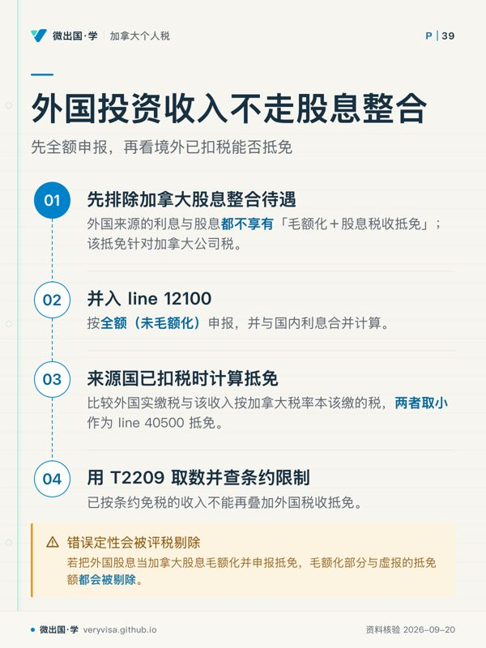
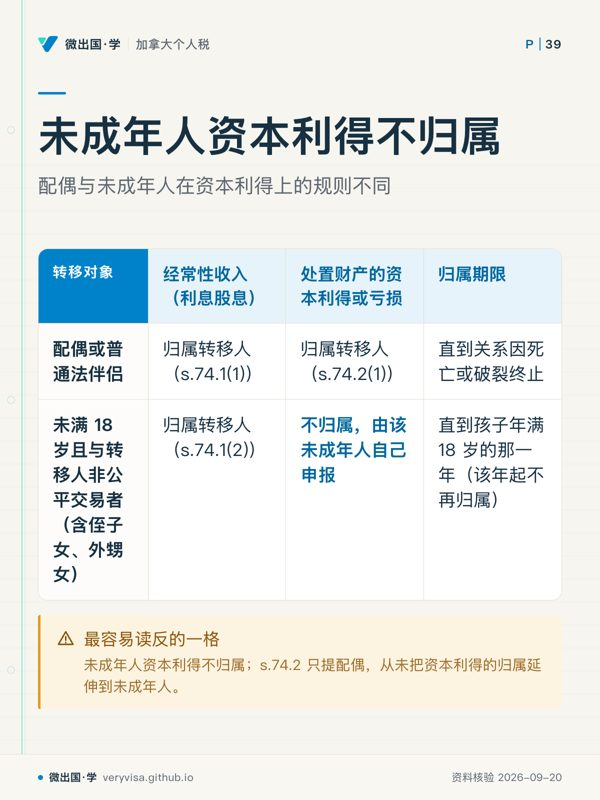
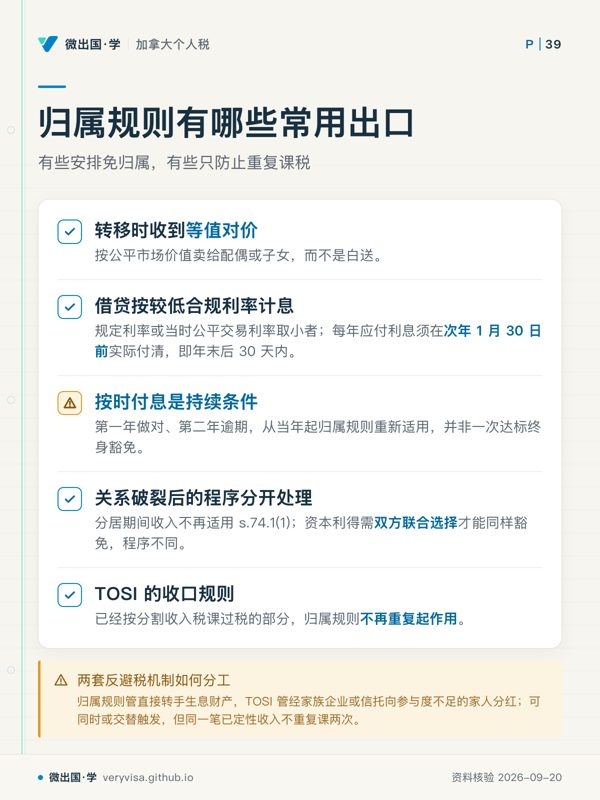

🃏 Flashcards · 3 闪卡 · 3 张 🖼 Slides · 4 幻灯 · 4 页 ✍️ Questions · 6 刷题 · 6 道
投资收入与注册账户 Investments and registered accounts P2 稳住 P2 Hold steady
ZH EN ZH + EN
先看这一章怎么考 First, how this chapter is tested
收入定性与计税口径判定题：给出利息、加国股息、外国股息及资本利得等混合凭据，考查各类别应税比例与抵免资格，核心测试考生能否识别外国股息无毛额化且无股息抵免、必须100%全额并入第12100行。 Characterizing income and the basis of taxation: gives mixed slips of interest, Canadian dividends, foreign dividends and capital gains and tests each category's inclusion ratio and credit eligibility; the core test is whether the candidate recognizes that foreign dividends have no gross-up and no dividend tax credit and must be included 100% in full on Line 12100. 归属规则对象与范围辨析题：给出向配偶或未满18岁未成年人转移生息资产或股票的场景，考查利息股息与资本利得的归属差异，核心测试未成年人资本利得不归属（s.74.2）而由其自行申报的关键例外。 Who and what the attribution rules cover: gives scenarios of transferring interest-bearing assets or shares to a spouse or a minor under 18 and tests the difference in attribution of interest and dividends versus capital gains; the core test is the key exception that a minor's capital gains are not attributed (s.74.2) and are reported by the minor. 规定利率贷款豁免持续性测试题：结合家庭内部借贷投资，考查s.74.5(2)豁免要件，重点测试每年1月30日前实际付清利息的持续性要求，识别逾期一年导致后续所有年份免税架构失效的考点。 Continuity test for the prescribed rate loan exemption: combines a loan within the family to invest with the requirements of the s.74.5(2) exemption, mainly testing the continuing requirement to actually pay the interest by January 30 each year, and recognizing the point that being one year late voids the tax-exempt structure for all later years. 最常丢分的陷阱（看到题干信号就警觉） Traps that cost the most marks (watch for the signal in the stem)
外国股息整合陷阱 Foreign dividend integration 题干出现「US shares」「foreign dividend」「T5 slip foreign income」「gross-up / DTC」等词。 The stem contains words such as 'US shares', 'foreign dividend', 'T5 slip foreign income' and 'gross-up / DTC'. 未成年人资本利得归属陷阱 Attribution of a minor's capital gains 题干描述父母向未满18岁子女转移股票/基金，且题目针对处置时的资本利得（capital gain upon sale）提问归属。 The stem describes parents transferring shares or funds to a child under 18 and asks about attribution of the capital gain upon sale. 规定利率贷款付息逾期陷阱 Late interest payment on a prescribed rate loan 题干出现「prescribed rate loan」「paid interest on February 5 / missed January 30」「subsequent year」。 The stem contains 'prescribed rate loan', 'paid interest on February 5 / missed January 30' and 'subsequent year'. 本章考点页：导图、要点表、7 道带逐项解析的练习 →
核实日期：2026-10-30｜本页口径：2026 税年（2027 年 2–4 月申报） 。
同样是「投资账户里多出来的一笔钱」，加拿大税法给了三套完全不同的对待：一笔银行利息要全额 并入收入，一笔加拿大公司股息要先放大 再打折抵免，一笔股票处置的资本利得却只算一半 。三者混着报，是投资收入申报里最常见也最贵的错报之一——算错税率是小事，把该归到配偶或孩子名下的收入错记成自己名下（或反过来），会被 CRA 重新分配收入并追加利息。这页讲清楚这三条逻辑各自从哪来、什么时候会被「归属规则」拉回原主、以及一笔钱该扣的成本（carrying charges）能不能扣。这一页帮你对一笔投资收入先判定它属于哪一类并算出应税口径；判断转给配偶或未成年子女的财产，其收益该由谁申报；分清哪些投资顾问费能进 line 22100、哪些不能。
ℹ️
这页不讲的三件事
资本利得的纳入率、LCGE、表面亏损等计算细节在 ca-invest-02-capital-gains；股息毛额化与抵免率的逐张 slip 逐个框号 填法、以及外国税收抵免的取小值算法在 ca-core-05-pension-investment-income；RRSP/TFSA/FHSA 各自的供款上限与提取规则在 ca-invest-03-rrsp-tfsa-fhsa。本页只回答「这笔钱在法律上算谁的、按哪套逻辑收税」。
一、制度设计与底层逻辑：三套逻辑各自解决什么问题
投资收入不是一个税种，是三个税种挤在同一张报税表里。国会对利息、股息、资本利得分别设计了不同的课税口径，背后是三个不同的政策判断：
利息按全额课税 ，逻辑最简单：利息是纯粹的资金时间价值，出借人没有承担企业经营那种「亏本」的风险（哪怕借款人违约，那是信用风险不是投资风险），法律因此不给它任何优惠，赚多少利息就把多少利息全部计入应税收入，边际税率是多少就按多少缴。这也是为什么把大额固定收益资产（GIC、债券、定存）放进非注册账户往往最不划算——它是三类收入里唯一一分钱优惠都没有的。
股息用「毛额化＋税收抵免」两步走 ，解决的是双重课税问题：一家加拿大公司先按公司税税率交了一遍税，才能把税后利润当股息分给股东；如果股东个人层面再按全额课一次税，同一笔利润等于被两级政府各课一次。国会的解法叫「整合」（integration）——把股东实收的股息先放大 ，模拟出公司分红前那笔税前利润的大小，再用股息税收抵免 把公司层面已经缴过的那部分税还给股东，让两级合计的税负近似等于股东自己直接挣这笔钱应缴的税。这套机制只对加拿大应税公司 分配的股息生效：外国公司的股息从来没有在加拿大公司税网里被课过一次税，也就没有「整合」的对象，所以外国股息没有毛额化、没有股息税收抵免 ，只能全额并入利息那一类一起报（第二节详解）。
资本利得只算一半 ，理由与前两者都不同：处置资本财产的利得，本质上是承担了价格下跌风险之后换来的回报，纳入率打折是国会用来鼓励风险资本、缓解「名义利得里混有通胀虚增」这两个问题的政策工具，不是双重课税的补偿——这条纳入率历史上变动过（详见 ca-invest-02-capital-gains：2024 年预算一度提案改成 2/3，2025 年 3 月政府宣布取消，从未生效，现行仍是二分之一）。
这三套逻辑之上，还叠着一条防线：归属规则（attribution rules）。 如果允许纳税人把生息资产随意转给税率更低的配偶或未成年子女、由对方按低税率申报这笔收入，累进税制的整个根基就会被架空——高收入的一方只要把资产「过户」给低收入的家人，家庭总税负就能大幅下降，而这与「谁真正承担了投资风险、谁实际掌控这笔资产」毫无关系。ITA 第 74.1 至 74.5 条因此规定：符合条件的转移或借贷，其收入或亏损 （不是所有权）在计税时仍视为转移人自己的，直到关系终止或子女成年为止；错报的法律后果是 CRA 按归属规则重新分配收入到转移人名下，并对因此产生的少缴税款追加利息。这条防线与前面三套课税逻辑是两个不同层面的问题：前者回答「这笔钱按什么税率交税」，归属规则回答「这笔钱在报税表上应该写在谁的名字下面」。
二、2026 税年现行规则与数字 本节回答 This section answers 掌握三种收入口径与股息毛额化抵免率 Mastering the three income bases and the dividend gross-up and credit rates 本章考题 1 Question 1 本章考题 2 Question 2 本章考题 3 Question 3 本章考题 4 Question 4
2.1 三种投资收入的课税定性一览
图：三种投资收入的课税定性
这张表本身就是本页的核心判断依据：拿到一笔陌生的投资收入，先按这张表定性，再决定走哪条计算路径——外国来源的股息，定性上直接归进「利息」这一行，不进「加拿大公司股息」那一行 ，这是最容易被搞混的一处。
2.2 股息毛额化与抵免率：一张「三年三个值都一样」的三列表
三年同一个值，是因为这两组比例分别写在 ITA s.82(1)(b)（毛额化率）与 s.121（抵免率，法条原文是 6/11 与 9/13 两个分数，换算成占应税金额的百分比就是上表的 15.0198%（2026 税年；已生效；官方公布值） 与 9.0301%（2026 税年；已生效；官方公布值）），不像 TFSA、RRSP 那样每年指数化，只有改法才会变——上一次改法分别是 2012 年（合资格档定型）与 2019 年（非合资格档定型），此后两条都没再动过。逐张 slip、逐个框号的填法与 line 40425 的取数路径，见 ca-core-05-pension-investment-income 第 2.4 与 2.5 节，本页不重复。
2.3 外国投资收入：没有整合，只有外国税收抵免
外国来源的利息与股息都不享有加拿大这套「毛额化＋DTC」的整合待遇，原因在第一节已经说清楚——DTC 抵消的是加拿大公司税 ，外国公司交的是外国税，两者不是同一件事。实务处理分两步：① 全额（未毛额化）并入 line 12100，与国内利息合并计算；② 如果这笔收入已经在来源国被扣过税，回到加拿大侧按「外国实缴税」与「这笔收入按加拿大税率本该缴多少」两者取小，作为外国税收抵免（line 40500）抵掉一部分——这条规则、取数表格 T2209 与不可叠加已条约免税收入的限制，ca-core-05 第 2.5 节已有完整算例，本页不再重算。这里要单独强调的是定性错误 ：把外国股息当成加拿大股息去做毛额化、申报股息税收抵免，是把整合待遇用在了没有加拿大公司税可抵的收入上，评税时会被剔除毛额化部分与虚报的抵免额。
2.4 归属规则：谁转给谁、转哪种财产、归属到几时
这张表里最容易读反的一格，是未成年人那一行的第二列： s.74.2 全文只提「spouse or common-law partner」，从未把资本利得的归属延伸到未成年人（加拿大联邦法规库（论坛解读） ）。也就是说，把一笔股票转给未满 18 岁的孩子，孩子持有期间收到的利息、股息，报税时仍要写进转移人自己的收入；但如果孩子日后卖掉这只股票，那笔资本利得从一开始就是孩子自己的收入，不会被拉回父母名下——这条不对称设计，是很多家庭把「预期会大幅升值、暂时不产生利息股息」的资产（比如成长股）优先转给未成年子女的直接动因。
归属规则不是无条件生效，s.74.5 给出三条常用的出口（加拿大联邦法规库 ）：① 转移时收到等值对价 （按公平市场价值卖给配偶/子女，而不是白送）；② 借贷按规定利率或当时的公平交易利率（取小者）计息，且每年应付利息必须在次年 1 月 30 日前实际付清 （s.74.5(2)，即每个日历年结束后 30 天内）——这一条是持续性条件 ，第一年做对、第二年忘了在期限内付息，从当年起归属规则重新适用，不是「一次达标终身豁免」；③ 因婚姻/同居关系破裂而分居后，分居期间产生的收入不再适用 74.1(1)（但资本利得那一侧需要双方联合选择才能同样豁免，两者程序不同，见 s.74.5(3)）。另有一条容易被忽略的收口：已经按「分割收入税」（Tax on Split Income, TOSI，常俗称 kiddie tax）课过税的部分，归属规则不再重复起作用 （s.74.5(13)）——TOSI 与归属规则是两套独立的反避税机制，覆盖的手法不同：归属规则管的是「直接把生息财产转手给家人」，TOSI 管的是「通过家族企业/信托把分红分给参与度不够的家人」，两者可能同时或交替触发，但不会对同一笔已经定性的收入重复课两次反避税税。
2.5 Line 22100 Carrying Charges：可扣与不可扣的分界线
这张表背后的判断逻辑是两条线交叉：账户是否已经享受注册计划的税收递延/免税待遇 （享受了，管理费就不能重复省税）与这笔支出到底是「赚取收入的成本」还是「取得资产本身的成本」 （后者进 ACB，不进 line 22100）。这条分界线常年不变，属于长青机制，不随年度指数化。
节末检索小测 · 先别往回翻，凭记忆作答 Quick recall check: answer from memory before scrolling back
An individual taxpayer residing in Canada receives $1,000 of eligible dividends from a taxable Canadian corporation in the 2026 tax year. According to the federal rules in the lecture, how must this dividend be reported on the taxpayer's federal return?
一名居住在加拿大的个人纳税人在2026税年从一家加拿大应税公司收到了$1,000合资格股息。根据讲义中的联邦规则，该股息必须如何在纳税人的联邦报税表上申报？
a Report CAD 1,000 directly as taxable income without any gross-up, with zero dividend tax credit, identical to interest income. ✗ 属于「收入性质混淆陷阱」。加拿大合资格股息享受整合待遇，不能像利息一样按100%直接计入应税收入，必须先进行毛额化（gross-up）。 This is the 'confusing the nature of income' trap. Canadian eligible dividends get integration treatment and cannot be included 100% directly as taxable income like interest; they must first be grossed up.
b Gross it up by 38% to CAD 1,380 and claim a federal dividend tax credit of 15.0198% of that taxable amount. ✓ 正确。合资格股息毛额化 38%（应税金额 1,000 × 1.38 = 1,380 元），联邦股息税收抵免按应税金额的 15.0198% 计算（即毛额化部分的 6/11）。 Correct. Eligible dividends are grossed up by 38% (taxable amount $1,000 x 1.38 = $1,380), and the federal dividend tax credit is calculated as 15.0198% of the taxable amount (that is, 6/11 of the gross-up part).
c Gross up the dividend by 15% to report CAD 1,150 in taxable income, and claim a federal dividend tax credit of 9.0301% of the taxable amount. ✗ 属于「股息档次混淆陷阱」。15%毛额化率与9.0301%抵免率适用于非合资格股息（non-eligible dividends），而非本题中的合资格股息。 This is the 'mixing up dividend tiers' trap. The 15% gross-up and the 9.0301% credit rate apply to non-eligible dividends, not the eligible dividends in this question.
d Include 50% of the dividend (CAD 500) into taxable income, identical to the inclusion rate for capital gains. ✗ 属于「资本利得与股息混淆陷阱」。50%纳入率仅适用于处置资本财产产生的资本利得（capital gains），股息必须走「毛额化＋抵免」的整合通道。 This is the 'confusing capital gains with dividends' trap. The 50% inclusion rate applies only to capital gains from disposing of capital property; dividends must go through the 'gross-up plus credit' integration channel.
看答案与每个选项的解析 Show the answer and why each option is right or wrong 答案 Answer ：b
三、实务流程：拿到一笔投资收入，怎么判定、怎么填 本节回答 This section answers 投资收入定性与填报实务五步判定流程 The five-step process for characterizing and reporting investment income 本章考题 5 Question 5
先看是不是转移／借贷给了配偶或未成年家人 ——如果是，先套第 2.4 节的表判断归属规则是否适用、是否落进 s.74.5 的例外，再决定这笔收入最终写进谁的报税表。这一步在填表之前，因为归属一旦成立，整套后续填表（哪张 slip 报到谁名下）都要按转移人而不是名义持有人来走。再看这笔钱的来源国。 加拿大应税公司分配的股息才走「毛额化＋DTC」这条路（line 12000/12010 与 line 40425，详见 ca-core-05）；境外来源的利息与股息一律并入 line 12100，若已被外国扣税，另走 line 40500 的外国税收抵免。折价债券与剥离债券（strip bond）按年度应计申报，不等到赎回。 息票债券每半年收到的利息由发行方发 T5；但折价债（发行价低于面值，差额视为利息）与剥离债券没有 T5 ，持有人要自己按有效利率法逐年计算「应计但未收到」的利息计入当年 line 12100，并同步把这部分金额加进债券的 ACB——这样等到赎回或出售时，已经报过税的部分不会在计算资本利得时被重复课税。中途转手的一方，卖方要把「上次付息日至转手日」这段应计利息一并报进当年收入，买方则可以在 line 22100 把这笔已经计入卖方收入的应计利息作为「Interest Paid by You」申报扣除，同时相应调低自己的 ACB。T3 信托分配单要按框号拆开报，不能整单当一类收入处理。 常见的几个框各自流向不同的行：box 21 是分配给受益人的资本利得，走 Schedule 3、按 50% 纳入 line 12700；box 25 是外国非营业收入（foreign non-business income），并入 line 12100，同时填进 T2209 计算外国税收抵免；box 26 是「其他收入」（信托收入），减去 box 31 后走 line 13000（不是 12100，也不是 12700）；box 33/34 是外国营业收入与外国非营业收入已缴的外国税，填进 T2209 计算受益人自己那份外国税收抵免。合资格与非合资格股息另有专属框号（详见 ca-core-05 第三节表格），不与上述四个框混用。最后核对 line 22100 的可扣范围 （第 2.5 节表格），把非投资顾问费性质的支出（经纪佣金、保险箱费）从这一行剔除，改并入相应的 ACB 或处置成本计算。
节末检索小测 · 先别往回翻，凭记忆作答 Quick recall check: answer from memory before scrolling back
A junior tax preparer is preparing a T1 return for a client who earned various investment returns from non-registered accounts, including gifts made to family members. What is the mandatory first step the preparer should take in the practical determination process before entering amounts onto any tax lines?
一名初级报税员正在为一位客户准备T1税表，该客户从非注册账户中获得了多笔投资收益，并曾向家人赠与过资金。在将金额填入任何报税行之前，报税员在实务判定流程中必须采取的第一步是什么？
a Enter all T5 and T3 amounts into line 12100 under the name of whoever holds nominal legal title to the accounts. ✗ 属于「忽视归属规则陷阱」。在填表之前必须先判定归属规则（attribution rules），因为如果触发归属，整套凭单都要由转移人申报，不能直接按名义持有人填报。 This is the 'ignoring the attribution rules' trap. Before filling in the form, attribution must be determined first, because if attribution is triggered the whole set of slips must be reported by the transferor and cannot simply be entered by the nominal holder.
b Convert all foreign currency amounts to Canadian dollars and immediately calculate federal foreign tax credits on line 40500. ✗ 属于「流程顺序颠倒陷阱」。外国税收抵免计算属于后续计算步骤，必须先确认纳税人身份及归属定性后才能准确申报。 This is the 'wrong order of steps' trap. The foreign tax credit calculation is a later step, and the taxpayer's identity and attribution characterization must be confirmed first to report accurately.
c First decide whether attribution applies to any transfer or loan to a spouse or minor, and whether an s.74.5 exception is met. ✓ 正确。根据讲义第三节实务流程第一步，拿到投资收入首先要看资金是否来源于对配偶或未成年亲属的转移或借贷，先套用归属规则及s.74.5豁免条款确定最终纳税主体，再决定后续具体表格和行号的填报。 Correct. Under Step 1 of the practical procedure in Section 3 of the lecture, when investment income is received, first look at whether the funds come from a transfer or loan to a spouse or minor relative, apply the attribution rules and the s.74.5 exemptions to decide who finally pays the tax, and only then decide the specific forms and lines to fill in.
d Sum up all brokerage trading commissions and claim them as carrying charges on line 22100. ✗ 属于「交易佣金与承担费用混淆陷阱」。买卖证券的佣金严禁在第22100行扣除，必须并入调整后成本基数（ACB）或处置成本中体现。 This is the 'confusing trading commissions with carrying charges' trap. Commissions on buying and selling securities must never be deducted on Line 22100 and must be merged into the adjusted cost base (ACB) or costs of disposition.
看答案与每个选项的解析 Show the answer and why each option is right or wrong 答案 Answer ：c
四、联邦之外：BC 省与跨境的两个提示 本节回答 This section answers 辨析BC省定性与对美申报跨境机制区别 Distinguishing BC characterization from the cross-border mechanism for US filing
归属规则、TOSI、line 22100 的可扣范围，都是联邦法律层面的定性 ，不因居住省份而异——一旦归属规则把收入分回转移人名下，这笔收入连同其省级税负一起转移，BC 省表不会另设一套省级归属规则来推翻联邦定性。BC 侧真正独立的部分只有股息税收抵免的省级抵免率（与联邦的 15.0198%（2026 税年；已生效；官方公布值）/9.0301%（2026 税年；已生效；官方公布值） 各自独立计算，ca-core-05 第四节已有数字），以及归属规则计算出的省税，最终仍是按转移人当年整体收入过一遍 BC 428 的省税阶梯。
对持美国身份或需要同时对美申报的加拿大居民，最值得记住的一点是：加拿大的归属规则与 TOSI，在美国税法里没有逐条对应的机制 ——美国有自己的「未成年子女未实现收入」规则（俗称 kiddie tax，机制与门槛都不同，属另一套跨境板块的内容），不能拿加拿大这套 s.74.1–74.5 的分析直接套用到美方申报上；同一笔转移给未成年子女的投资收入，在加拿大侧按本页规则判断归属，在美方 1040 上则要单独按美方规则重新判断一遍，两边的结论未必一致。完整的跨境对照留给 xb 板块的专页处理，本页只提醒这一点不能想当然地平移。
节末检索小测 · 先别往回翻，凭记忆作答 Quick recall check: answer from memory before scrolling back
A taxpayer resident in British Columbia transferred dividend-paying investments to their minor child. The taxpayer is also a US citizen who must file US Form 1040. How do Canadian attribution rules interact with BC provincial tax and the US tax return?
一名居住在BC省的纳税人将其派息投资转移给了未成年子女。该纳税人同时也是一名必须申报美国Form 1040的美国公民。加拿大的归属规则如何与BC省税及美国报税表相互作用？
a Attribution is a federal characterization that BC tax follows too, but US rules have no exact equivalent and need a separate analysis. ✓ 正确。根据讲义第四节，归属规则（attribution rules）是联邦法律定性，收入一旦分回转移人名下，连同其省级税负一并转移，BC省不会另设规则推翻联邦定性；但对美申报时，美国税法没有逐条对应的归属机制，在Form 1040上必须按美方规则（如美方kiddie tax）独立判断，不能直接平移加方结论。 Correct. Under Section 4 of the lecture, the attribution rules are a federal characterization; once income is moved back to the transferor, the provincial tax on it moves with it, and BC does not set up its own rule to override the federal characterization; but for US reporting, US tax law has no provision-by-provision equivalent mechanism, and on Form 1040 the US rules (such as the US kiddie tax) must be applied independently, so the Canadian conclusion cannot be carried over directly.
b BC tax legislation has a provincial attribution rule that conflicts with federal rules, allowing the minor child to report all income on their BC provincial form. ✗ 属于「省税独立定性误解」。BC省表不设独立的省级归属规则来推翻联邦定性，联邦定性后的收入整体适用BC省税阶梯。 This is the 'provincial tax independent characterization' misunderstanding. The BC form has no separate provincial attribution rule overriding the federal characterization; once characterized federally, the income goes through the BC tax brackets as a whole.
c The US Internal Revenue Code automatically recognizes Canada's attribution rules under the tax treaty, so the US return must mirror the Canadian T1 outcome exactly. ✗ 属于「跨境机制平移陷阱」。讲义第四节明确提醒，加拿大归属规则在美国税法中没有逐条对应机制，不能想当然地直接平移至美方申报。 This is the 'cross-border mechanism carried over' trap. Section 4 of the lecture warns clearly that Canada's attribution rules have no provision-by-provision counterpart in US tax law, and cannot be transposed to the US filing by assumption.
d Attribution rules apply only to provincial BC tax, whereas federal tax is always paid by the nominal recipient of the dividend. ✗ 属于「法条层级颠倒错误」。归属规则（ITA s.74.1–74.5）本身是联邦所得税法条文，统领联邦与省税定性。 This is the 'level of the legal provision reversed' error. The attribution rules (ITA s.74.1 to 74.5) are themselves provisions of the federal Income Tax Act, and they govern the characterization for both federal and provincial tax.
看答案与每个选项的解析 Show the answer and why each option is right or wrong 答案 Answer ：a
五、历史变革：归属规则为什么会有，TOSI 为什么后来又加了一层 本节回答 This section answers 归属规则与TOSI两层反避税演进动因 Why attribution and TOSI evolved as two layers of anti-avoidance
归属规则针对的是最直接的避税手法——把生息财产的所有权转给低税率的家人，让对方按低税率申报这笔收入。这个手法在累进税制下永远有利可图，只要边际税率存在梯度，这条防线就有存在的必要；现行的 s.74.1 条文本身在 1994、2000、2007、2011 年经历过几次技术性修订，最近一次实质修订是 2011 年 （加拿大联邦法规库 ），但「转移生息财产给配偶或未成年子女、收入仍归转移人」这条基本框架长期未变。
归属规则管不住的是另一种更迂回的分红手法：通过家族企业或信托把利润分给参与度不够的家人。 一个家庭如果直接持有一家小企业的股份，父母可以把部分股份挂在配偶或成年子女名下，由公司分红给这些家人，而这些家人可能完全不参与经营——这种安排不涉及「转移生息财产」，s.74.1 这条以「财产转移」为前提的规则根本管不到它。国会因此在2000 年 引入了「分割收入税」（Tax on Split Income, TOSI），最初只针对未满 18 岁的未成年人，俗称「kiddie tax」——对这些孩子从家族相关企业收到的股息、按最高联邦与省边际税率整体课税，抵免范围也被限缩到只剩股息税收抵免、外国税收抵免与残障税收抵免。这套制度直到 2018 年才被扩大到 18 岁以上的家庭成员（含配偶） ，此后才有了「排除股份」「排除营业」等一系列豁免测试来区分哪些家庭成员的分红是真实参与经营换来的、哪些是纯粹分割收入。这也是为什么第 2.4 节要特别强调「归属规则与 TOSI 是两套机制」——它们诞生的时间差了几十年，各自堵的是完全不同的漏洞，一套堵直接转移财产，另一套堵通过企业结构间接分红。
节末检索小测 · 先别往回翻，凭记忆作答 Quick recall check: answer from memory before scrolling back
Why did the Canadian Parliament introduce the Tax on Split Income (TOSI) in 2000 and substantially expand it in 2018, even though attribution rules (ITA s.74.1 to s.74.5) had already existed for decades?
尽管归属规则（ITA s.74.1至s.74.5）已经存在了数十年，为什么加拿大国会仍在2000年引入分割收入税（TOSI），并在2018年进行了大幅扩展？
a Attribution rules were declared unconstitutional by the Supreme Court of Canada and were entirely phased out. ✗ 属于「法条有效性捏造」。归属规则从未被废止或裁定违宪，现行依然有效。 This is the 'made-up claim about the statute's validity' trap. The attribution rules have never been repealed or ruled unconstitutional and remain in force.
b TOSI was enacted to reduce the federal capital gains inclusion rate for family-owned farming properties. ✗ 属于「政策目的捏造」。TOSI是针对分割收入的反避税税制，与农场资本利得豁免无关。 This is the 'inventing the policy purpose' trap. TOSI is an anti-avoidance regime for split income and has nothing to do with the farm capital gains exemption.
c TOSI was created to eliminate the gross-up and dividend tax credit mechanism for all Canadian public corporations. ✗ 属于「概念混淆错误」。TOSI并不取消加国上市公司的股息整合机制，它针对的是私人企业/信托的分红滥用。 This is the 'concept confusion' error. TOSI does not remove the dividend integration mechanism for Canadian public companies; it targets the abuse of dividends from private businesses and trusts.
d Attribution needs a transfer of property, so it missed private companies and trusts paying dividends to family members. ✓ 正确。根据讲义第五节，归属规则以「转移生息财产」为前提，管不住家族企业通过股权结构或信托将利润以分红形式输送给未积极参与经营的家人；国会因此在2000年引入TOSI堵住针对未成年人的企业分红，并在2018年进一步扩大到成年家庭成员。 Correct. Under Section 5 of the lecture, the attribution rules presuppose 'a transfer of interest-bearing property', and cannot stop a family business from channelling profits as dividends to family members who are not actively involved in the business, through share structures or trusts; Parliament therefore introduced TOSI in 2000 to close the corporate dividend route involving minors and extended it further in 2018 to adult family members.
看答案与每个选项的解析 Show the answer and why each option is right or wrong 答案 Answer ：d
六、案例 本节回答 This section answers 账户配置与信托分流等案例综合实战 A combined case study of account allocation and trust distribution splitting
案例一：温哥华的双职工家庭（示范：资产该放注册账户还是非注册账户）
林先生与林太太名下除了 RRSP、TFSA 额度都用满外，还有一笔 $80,000 的家庭储蓄需要投资（示例数字）。他们面前有两个选择：把这笔钱换成收益率较高的定存/债券基金放进非注册账户，或者优先把这笔钱换成派息蓝筹股放非注册账户、把定存类资产挪进已经腾出空间的 TFSA。按第一节的逻辑，利息是三种收入里唯一没有任何优惠的一种，边际税率是多少就全额按多少交——把它放进免税增长的 TFSA，等于把「原本要全额课税的收入」直接变成免税收入；而派息股票即使放在非注册账户，也还有毛额化后的 DTC 部分抵消，在同等收入和适用抵免等条件下，税负可能低于利息。常见错报不是填表错误，而是资产配置的顺序错了 ：配置仍须同时考虑预期收益、风险、外国预扣税和未来提取；单凭收入类别不能裁定所有家庭的优先次序。
案例二：素里的祖父母与孙辈（示范：借贷给未成年人避免归属，以及资本利得不归属的边界）
王先生借给未满 18 岁的孙女 $50,000 用于购买一只成长股基金（示例数字），双方签订借据，按当时的规定利率计息，并且此后每年都在次年 1 月 30 日前付清当年应付利息。因为满足了 s.74.5(2) 的三个条件，这笔投资此后产生的利息、股息不会归属回王先生名下，而是孙女自己名下的收入（通常远低于王先生的边际税率）。三年后孙女卖出这只基金，实现了一笔可观的资本利得——即使这笔投资完全没有触发归属规则，这个结果本身也不意外：即便没有满足借贷例外，s.74.2 从一开始就没有把资本利得的归属延伸到未成年人身上，这笔利得始终是孙女自己的收入。常见错报 ：家庭成员事后忘记逐年按时付息（比如某一年拖到 2 月才付），从那一年起归属规则重新适用，之前几年的免税安排不受影响，但当年及此后的利息、股息要重新归属回王先生名下，很多家庭直到评税通知寄来才发现这一条持续性要求被打破了。
案例三：列治文的退休投资者（示范：T3 信托分配与 line 22100 的可扣范围）
陈女士退休后主要靠一个非注册投资账户生活，当年收到一张 T3 信托分配单，box 21 显示资本利得 $3,780、box 25 显示外国非营业收入 $1,200、box 26 显示其他收入 $450（示例数字）；她同时为这个非注册账户支付了 $600 的投资顾问费，另有一笔 RRSP 账户的顾问费 $300 由同一家机构收取。按第三节的流程：box 21 的 $3,780 走 Schedule 3、按 50% 纳入 line 12700；box 25 的 $1,200 并入 line 12100；box 26 的 $450 单独走 line 13000；非注册账户的 $600 顾问费可以在 line 22100 申报扣除，但 RRSP 账户的 $300 顾问费不能 扣，因为 RRSP 本身已经享有税收递延待遇。常见错报 ：把 box 26 的「其他收入」和 box 25 的外国非营业收入混在一起都塞进 line 12100，或者把两个账户的顾问费加在一起整笔申报到 line 22100，把不可扣的那部分也一并扣掉。
节末检索小测 · 先别往回翻，凭记忆作答 Quick recall check: answer from memory before scrolling back
In Case 1 of the lecture, a Vancouver couple with maximized RRSP and TFSA contributions has additional non-registered savings to invest. When deciding between holding a guaranteed investment certificate (GIC) earning interest versus Canadian dividend-paying equities, why is holding the GIC in a non-registered account considered the least tax-efficient choice?
在讲义的案例一中，温哥华一对夫妇的RRSP和TFSA额度均已用满，手头有额外的非注册储蓄用于投资。在选择持有赚取利息的定存（GIC）与加拿大派息股票之间，为什么将GIC放在非注册账户中被认为是税效最低的选择？
a Interest income in non-registered accounts is subject to a 138% gross-up, multiplying the tax liability beyond actual cash received. ✗ 属于「毛额化机制张冠李戴」。毛额化（gross-up）仅适用于加拿大公司股息以计算税前利润，利息收入绝对不进行毛额化。 This is the 'gross-up mechanism misattributed' trap. Gross-up applies only to Canadian company dividends to calculate pre-tax profit; interest income is never grossed up.
b Interest is fully taxable at the investor's marginal rate with no credit, while Canadian dividends get the dividend tax credit. ✓ 正确。利息是三类投资收入里唯一没有任何优惠的一类，全额按本人边际税率计税；加拿大股息有股息税收抵免，资本利得只纳入 50%。所以利息类资产放在非注册账户税负最重。 Correct. Interest is the only one of the three kinds of investment income with no preference at all, taxed in full at the person's marginal rate; Canadian dividends have the dividend tax credit, and capital gains are included at only 50%. So interest-type assets bear the heaviest tax in a non-registered account.
c GIC interest is subject to immediate 15% foreign withholding tax regardless of where the investor resides. ✗ 属于「外国预扣税混淆」。加拿大境内机构发行的GIC对加拿大税务居民不存在外国预扣税。 This is the 'foreign withholding tax confusion'. A GIC issued by a Canadian institution has no foreign withholding tax for a Canadian tax resident.
d Financial institutions charge an automatic penalty on line 22100 whenever GIC interest is reported on a non-registered return. ✗ 属于「捏造费用惩罚」。报税表上没有任何针对GIC利息申报的额外罚款。 This is the 'inventing a fee penalty' trap. There is no extra penalty on the return for reporting GIC interest.
看答案与每个选项的解析 Show the answer and why each option is right or wrong 答案 Answer ：b
七、常见错报与自查清单 本节回答 This section answers 排查投资收入申报八项高频致命错报 Screening the eight high-frequency fatal misreporting errors in investment income
把外国股息当加拿大股息做毛额化、申报股息税收抵免 ——外国股息从未在加拿大公司税网里被课过税，没有整合的对象，只能全额并入 line 12100，不能享受 DTC。转给配偶的生息资产，以为过户之后收入就跟自己无关 ——只要关系存续、且不满足 s.74.5 的例外，利息、股息在计税时仍要写进转移人自己的申报表。转给未成年子女的资产，处置时把资本利得也当成「归属回自己」处理 ——s.74.2 从未把资本利得的归属延伸到未成年人，这部分利得从一开始就是孩子自己的收入。忘记「每年 1 月 30 日前付清上一年利息」是持续性条件 ——按规定利率借贷的第一年做对了，之后某一年利息拖过次年 1 月 30 日，从那一年起归属规则重新适用，不是「一次达标、终身有效」。把 RRSP、TFSA 名下的投资顾问费拿去 line 22100 申报 ——这类账户已经享有税收递延或免税待遇，管理费不能重复省税；只有非注册账户的顾问费能扣。把买卖证券的经纪佣金/手续费也塞进 line 22100 ——这类成本应当并入证券的 ACB 或处置成本，在计算资本利得/亏损时体现，不是当年的费用扣除。折价债券或剥离债券持有期间不申报应计利息，等到赎回才一次性报 ——这两类债券要求逐年按有效利率法申报「应计但未收到」的利息，不按现金收付制处理。把 T3 信托分配单的 box 26「其他收入」和 box 25「外国非营业收入」混填进同一行 ——两者分别走 line 13000 与 line 12100，是两个不同的行，混填会让 CRA 系统比对不上原始信息单。
节末检索小测 · 先别往回翻，凭记忆作答 Quick recall check: answer from memory before scrolling back
An investor paid $500 in trading commissions to a brokerage when acquiring units of an exchange-traded fund in a non-registered account. According to the common errors checklist in the lecture, how should this expense be treated for income tax purposes?
一位投资者在非注册账户中购买交易所交易基金（ETF）时向经纪商支付了$500交易佣金。根据讲义中的常见错报与自查清单，该笔支出在所得税申报中应当如何处理？
a Deducted immediately as an eligible investment carrying charge on line 22100 of the current year's return. ✗ 属于「交易佣金与承担费用混淆陷阱」。买卖证券的经纪佣金不是当期管理费用，严禁在第22100行扣除。 This is the 'confusing trading commissions with carrying charges' trap. Brokerage commissions on buying and selling securities are not current management expenses and must never be deducted on Line 22100.
b Claimed as an employment expense on Form T777 to reduce net employment income. ✗ 属于「费用性质混淆错误」。证券交易佣金与雇员受雇支出（Form T777）毫无关系。 This is the 'confusing the nature of expenses' error. Securities trading commissions have nothing to do with employee employment expenses (Form T777).
c Added to the ACB of the units, so it reduces the capital gain or increases the loss when the units are sold. ✓ 正确。根据讲义第七节第6条自查清单与第2.5节表格，买卖证券的经纪佣金/手续费应当并入资产的调整后成本基数（ACB）或处置成本，在将来计算资本利得或亏损时体现，不能作为当年的第22100行承担费用（carrying charges）扣除。 Correct. Under item 6 of the self-check list in Section 7 and the table in Section 2.5 of the lecture, brokerage commissions and fees on buying and selling securities should be merged into the asset's adjusted cost base (ACB) or the costs of disposition and reflected when capital gains or losses are calculated in future; they cannot be deducted in the current year as carrying charges on Line 22100.
d Reported as other income on line 13000 to offset subsequent trust distribution deductions. ✗ 属于「荒谬收入填报陷阱」。佣金属于支出成本，绝不能填入第13000行作为收入申报。 This is the 'absurd income reporting' trap. Commissions are an expense cost and can never be entered on Line 13000 as income to offset later trust distributions.
看答案与每个选项的解析 Show the answer and why each option is right or wrong 答案 Answer ：c
术语双语表
想检验自己，可以做本板块的练习题（共 50 道）：按主题练习 。
本页知识卡 不看正文也能拿到这一节的核心内容：先看导读，再看图。点图放大，左右翻页。
放大 ⤢ 只有加拿大公司股息走毛额化与股息税收抵免。 先看 横向看每一行，计入方式、优惠和凭证来源要配套判断。易漏 名字里有“股息”不代表能用本国公司的那套优惠，先辨付款方所在国。下一步 去练习拿陌生凭证先分类，再把跨境凭证问题带给持牌专业人士。详情与分享 → 
放大 ⤢ 抵免取外国实缴税与该收入在加拿大本该缴税两者较小。 先看 顺着流程先判断待遇，再落到申报位置，最后才处理境外扣税。易漏 最容易错在把境外公司的付款套进本国公司分红机制。下一步 去练习按一张境外投资凭证走流程，遇到条约冲突再问持牌专业人士。详情与分享 → 
放大 ⤢ 未成年人经常性收入归属，资本利得不归属。 先看 先按受让人分行，再横看持有期间收益与卖出结果是否回到转移人名下。易漏 这种差异会让预期大幅升值、暂不生息的资产更常被转给未成年子女。下一步 去练习把家庭转移案例按受让人和收入类型拆开，再带具体安排问持牌专业人士。详情与分享 → 
放大 ⤢ 借贷出口须年年按期付息；TOSI 已课税部分不再归属。 先看 先按交易定价、融资纪律、关系变化与重复计税几类问题来读。易漏 借款安排不是设好一次就结束，后续年度若逾期，保护会失效。下一步 去练习逐项核对家庭转移安排，再把协议和付款记录交持牌专业人士。详情与分享 → 本站依据官方原文自撰 · 出处见正文链接